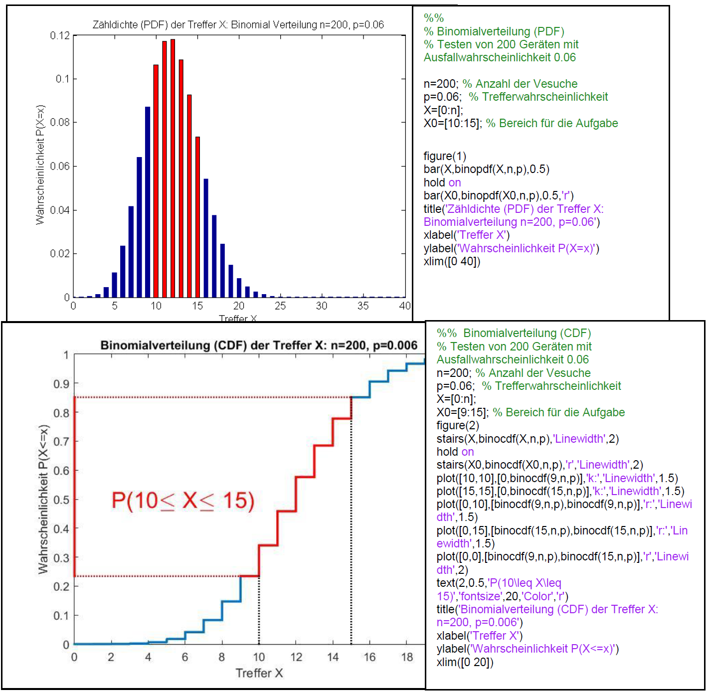

Wir betrachten eine Urne mit
\(N \)
Objekten. Darunter sind \(M \)
Objekte einer bestimmten Sorte, wir nennen sie Sorte \(M \)
, die Merkmalsträger, und \(N-M \)
andersartige Objekte. Es wird zufällig eine Stichprobe von \(n \) Objekten aus der Urne entnommen. Das Ziehen passiert nacheinander mit Zurücklegen des jeweils gezogenen Objekts. Die Zufallsvariable \(X \)
gebe die Anzahl der Merkmalsträger in der Stichprobe an. Die Verteilung von \(X \) heisst Binomialverteilung
. Mit Hilfe der Binomialkoeffizienten lässt sich die Anzahl der relevanten Ergebnisse abzählen und die Zähldichte (PDF) der Zufallsvariablen \(X \)
elegant aufschreiben. Bei jeder Ziehung ist es möglich (weil mit Zurücklegen gezogen wird) einen der \(M \)
verschiedenen Merkmalsträger zu ziehen. Um genau \(k \)
Merkmalsträger bei \(n \)
Ziehungen zu ziehen gibt es \(M^k \)
Möglichkeiten. Für die verbleibenden \(n-k \)
andersartigen Objekte in der Ziehung gibt es \((N-M)^{n-k} \) Möglichkeiten. Insgesamt ergibt das
\( {M^k} \cdot {(N - M)^{n - k}} \)
verschiedene Möglichkeiten bei \(n \)
Ziehungen mit \(M \)
Merkmalsträgern und \(N-M \)
andersartigen Objekten. Berücksichtigt man noch, dass es bei \( n \) Ziehungen
\( \left( \begin{array}{l} n\\ k \end{array} \right) \)
verschiedene Reihenfolgen für \(k \) Treffer gibt, so erhält man insgesamt
\( \left( \begin{array}{l} n\\ k \end{array} \right) \cdot {M^k} \cdot {(N - M)^{n - k}} \)Möglichkeiten für eine Stichprobe mit \(k \) Merkmalsträgern und \(n-k \) Objekten ohne das Merkmal. Die Wahrscheinlichkeit für genau \(k \) Merkmalsträger in der Stichprobe von \(n \) Objekten ist demnach:
\( P(X = k) = \frac{{\left( \begin{array}{l} n\\ k \end{array} \right) \cdot {M^k} \cdot {{(N - M)}^{n - k}}}}{{{N^n}}} \)Wir formen diesen Bruch noch in die übliche Schreibweise für die Binomialverteilung um, und benützen die Abkürzung \( p = M/N \) für die Wahrscheinlichkeit bei einem Zug einen Merkmalsträger zu ziehen, die sogenannte Trefferwahrscheinlichkeit:
\( P(X = k) = \left( \begin{array}{l} n\\ k \end{array} \right) \cdot {[\underbrace {\frac{M}{N}}_p]^k} \cdot {[\underbrace {\frac{{N - M}}{N}}_{1 - p}]^{n - k}} = \left( \begin{array}{l} n\\ k \end{array} \right) \cdot {p^k} \cdot {(1 - p)^{n - k}} \)Immer dann ist ein stochastisches Experiment binomialverteilt, wenn es sich dabei um die \(n \)-malige Wiederholung immer desselben Grundexperiments handelt, bei dem es immer nur auf Erfolg (mit Erfolgswahrscheinlichkeit \(p \)) oder Misserfolg (mit Wahrscheinlichkeit \(1-p \) ) ankommt. Wichtig ist, dass sich die Ergebnisse der \(n \) Wiederholungen nicht untereinander beeinflussen, d.h. sie erfolgen stochastisch unabhängig voneinander. Die Anzahl der Treffer ist binomialverteilt mit den Parametern \(p \) für die Trefferwahrscheinlichkeit und \(n \) für die Anzahl der Versuche.
Beispiel
Die Wahrscheinlichkeit, dass ein bestimmter Gerätetyp einer Zuverlässigkeitsprüfung nicht standhält, beträgt \(p=0.06 \). Es werden \( n=200 \) Geräte unabhängig voneinander dieser Prüfung unterzogen. Die Anzahl \( X \) der dabei
herausfallenden schlechten Geräte ist binomialverteilt mit Zähldichte (PDF)
\( P(X = k) = \left( \begin{array}{l} 200\\ k \end{array} \right) \cdot {0.06^k} \cdot {0.94^{200 - k}} \).
Die Wahrscheinlichkeit, dass von diesen Geräten mindestens 10 und höchstens 15 die Zuverlässigkeitsprüfung nicht bestehen, wird mit Hilfe der kumulativen Verteilungsfunktion (CDF) \( F(k) = P(X \le k) \) ausgedrückt und zum
Beispiel mit Matlab folgendermassen berechnet:
\( P(10 \le X \le 15) = P(X \le 15) - P(X \le 9) = F(15) - F(9) \approx {\rm{0}}{\rm{.6169}} \)
Der Matlabbefehl dazu wäre binocdf(15,200,0.06)-binocdf(9,200,0.06).

Ein abstrakterer Zugang zur Binomialverteilung ist es, wenn die \( B(n,p)\)-verteilte Zufallsvariable \(X\) als Summe \(n\)
stochastisch unabhängiger, 0, 1-wertiger Zufallsvariablen \(X_i\) mit Trefferwahrscheinlichkeit \( P({X_i} = 1) = p \)
und Nichttrefferw.keit \( P({X_i} = 0) = 1 - p \), sogenannter Bernoulli
Variablen
, zu modellieren. Die Variable \(X_i\)
hat den Wert 1 bei einem Erfolg im \(i\)-ten Versuch und bei einem Misserfolg den Wert 0. Die Summe der \(X_i\)
\( X = \sum\limits_{i = 1}^n {{X_i}} \)
zählt die Anzahl der Erfolge bei \(n\) unabhängigen Versuchen und ist somit \( B(n,p) \) -verteilt. Der Erwartungswert der Bernoulli Variable \(X_i\) ist \( E({X_i}) = p \) und die Varianz ist
\( V({X_i}) = E({X_i}^2) - E{({X_i})^2} = p - {p^2} = p \cdot (1 - p) \)
Nach den Regeln für Kenngrössen von Zufallsvariablen, erhalten wir den Erwartungswert und die Varianz der \( B(n,p) \) -verteilten Zufallsvariable \(X\) folgendermassen:
\( E(X) = E(\sum\limits_{i = 1}^n {{X_i}} ) = \sum\limits_{i = 1}^n {E({X_i})} = n \cdot p \)und
Unten im Bild ist als Beispiel die Approximation der Zähldichte (PDF) der hypergeometrischen Verteilung \( H(800,340,12) \) durch die Binomialverteilung \( B(12,340/800) \) zu sehen.

Aufgabe 1
Die Wahrscheinlichkeit ein fehlerhaftes Maschinenteil zu erhalten sei 0.01. Bestimmen Sie die Wahrscheinlichkeit, dass unter 100 Stück höchstens drei fehlerhaft sind. Die Zufallsvariable \(X\) bezeichne die Anzahl der defekten Maschinenteile in einer Stichprobe von 100 Stück. Bestimmen Sie den Erwartungswert und die Varianz von \(X\).
Aufgabe 2
Fünf Arbeiter, die unabhängig arbeiten, benötigen elektrischen Strom, und zwar jeder mit Unterbrechungen durchschnittlich etwa 10 Minuten pro Stunde. Genügt es, die Stromversorgung so einzurichten, dass 3 Arbeiter gleichzeitig Strom entnehmen können, oder entstehen dann erhebliche Wartezeiten, indem 4 oder 5 Arbeiter gleichzeitig Strom entnehmen wollen?
Aufgabe 3
Herr Meier, der in seiner Firma für den Wareneinkauf zuständig ist, erhält eine Lieferung von 5000 elektronischen Bauteilen. Auf dem Transport wurden genau 10 Bauteile (von aussen nicht erkennbar) beschädigt. Herr Meier möchte die Qualität der erhaltenen Ware überprüfen. Darum wählt er zufällig 100 verschiedene Bauteile aus und testet ihre Funktion. Berechnen Sie die Wahrscheinlichkeit dafür, dass genau eines der getesteten Bauteile fehlerhaft ist. Verwenden Sie eine geeignete Approximation.